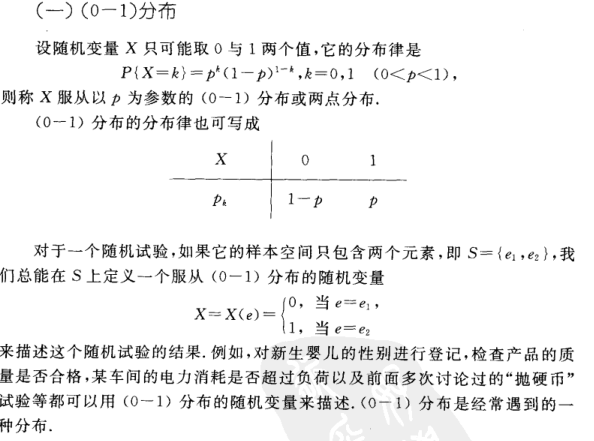

1.随机现象：在一定条件下，在个别试验或观察中呈现不确定性，但在大量重复试验或观察中其结果又具有一定规律性的现象，称为随机现象
2.样本空间和样本点:概率论术语。我们将随机实验E的一切可能基本结果（或实验过程如取法或分配法）组成的集合称为E的样本空间，记为S。样本空间的元素，即E的每一个可能的结果，称为样本点。
3.随机现象特点：(1)结果不止一个 (2)事先不知道哪一个会出现
4.统计规律：随机现象的各种结果所表现出的一定规律性
5.频数：在一组依大小顺序排列的测量值中，当按一定的组copy距将其分组时出现在各组内的测量值的数目
6.频率：一般我们称落在不同小组中的数据个数为该组的频数，频数与总数的比为频率。
1.概率：概率，又称或然率、机会率、机率(几率)或可能性，是概率论的基本概念。概率是对随机事件发生的可能性的度量，一般以一个在0到1之间的实数表示一个事件发生的可能性大小。
2.概率论性质：
1.加法原理（基本技术原理）：第m种方式有n种方法共：n1+n2+……nm
2.乘法原理第m个步骤有n种方法共n*m种
3.排列、组合的几个简单公式:
1、排列：从n个不同元素中取k个（1<=k<=n）（考虑顺序）的不同排列总数为:n(n-1)(n-2)……(n-k+1) k=n为全排列
2、组合：从n个不同元素中取k个（不考虑顺序）：n!/((n-k)!k!)
1.随机变量(random variable)表示随机试验各种结果的实值单值函数。随机事件不论与数量是否直接有关，都可以数量化，即都能用数量化的方式表达。
2.随机事件数量化的好处是可以用数学分析的方法来研究随机现象。例如某一时间内公共汽车站等车乘客人数，电话交换台在一定时间内收到的呼叫次数，灯泡的寿命等等，都是随机变量的实例。
3.随机取值的变量就是随机变量，随机变量分为离散型随机变量与 连续型随机变量两种(变量分为定性和定量两类，其中定性变量又分为分类变量和有序变量;定量变量分为离散型和连续型)，随机变量的函数仍为随机变量
4.有些随机变量,它全部可能取到的不相同的值是有限个或可列无限多个,这种随机变量称为"离散型随机变量".
4-1:离散型随机变量：
1.二维随机变量( X,Y)的性质不仅与X 、Y 有关,而且还依赖于这两个随机变量的相互关系。因此，逐个地来研究X或Y的性质是不够的，还需将(X，Y)作为一个整体来研究
2.联合分布函数(joint distribution function)亦称多维分布函数，随机向量的分布函数，以二维情形为例，若(X，Y)是二维随机向量，x、y是任意两个实数，则称二元函数。随机变量X和Y的联合分布函数是设(X,Y)是二维随机变量， 对于任意实数x,y，二元函数:F(x,y) = P{(X<=x) 交 (Y<=y)} => P(X<=x, Y<=y)称为二维随机变量(X,Y)的分布函数。
3.分布函数性质：

1.概率指事件随机发生的机率，对于均匀分布函数，概率密度等于一段区间(事件的取值范围)的概率除以该段区间的长度，它的值是非负的，可以很大也可以很小。单纯的讲概率密度没有实际的意义，它必须有确定的有界区间为前提。可以把概率密度看成是纵坐标，区间看成是横坐标，概率密度对区间的积分就是面积，而这个面积就是事件在这个区间发生的概率，所有面积的和为1。所以单独分析一个点的概率密度是没有任何意义的，它必须要有区间作为参考和对比
1.概率密度性质
1.数学期望
2.数学期望性质

1.方差
2.方差性质
泊松分布的期望与方差

1.大数定律又称大数法则、大数率。 在一个随机事件中，随着试验次数的增加，事件发生的频率趋于一个稳定值;同时，在对物理量的测量实践中，大量测定值的算术平均也具有稳定性。 在数理统计中，一般有三个定理，贝努利定理和辛钦定理，如:反映算术平均值和频率的稳定性。当n很大时，算术平均值接近数学期望;频率以概率收敛于事件的概率

2.中心极限定理：当样本量N逐渐趋于无穷大时，N个抽样样本的均值的频数逐渐趋于正态分布，其对原总体的分布不做任何要求，意味着无论总体是什么分布，其抽样样本的均值的频数的分布都随着抽样数的增多而趋于正态分布。

3.伯努利大数定律设fn为n重伯努利实验中事件A发生的次数，p为A在每次实验中发生的概率，则对任意给定的实数ε>0，则成立。
伯努利大数定律设fn为n重伯努利实验中事件A发生的次数，p为A在每次实验中发生的概率，则对任意给定的实数ε>0，则成立。
设有一随机变量序列，假如它具有形如(1)的性质，则称该随机变量服从大数定律。(又译为"贝努力大数定律")伯努利大数定律设fn为n重伯努利实验中事件A发生的次数，p为A在每次实验中发生的概率，则对任意给定的实数ε>0，有成立。即n趋向于无穷大时，事件A在n重伯努利事件中发生的频率fn/n无限接近于事件A在一次实验中发生的概率p。